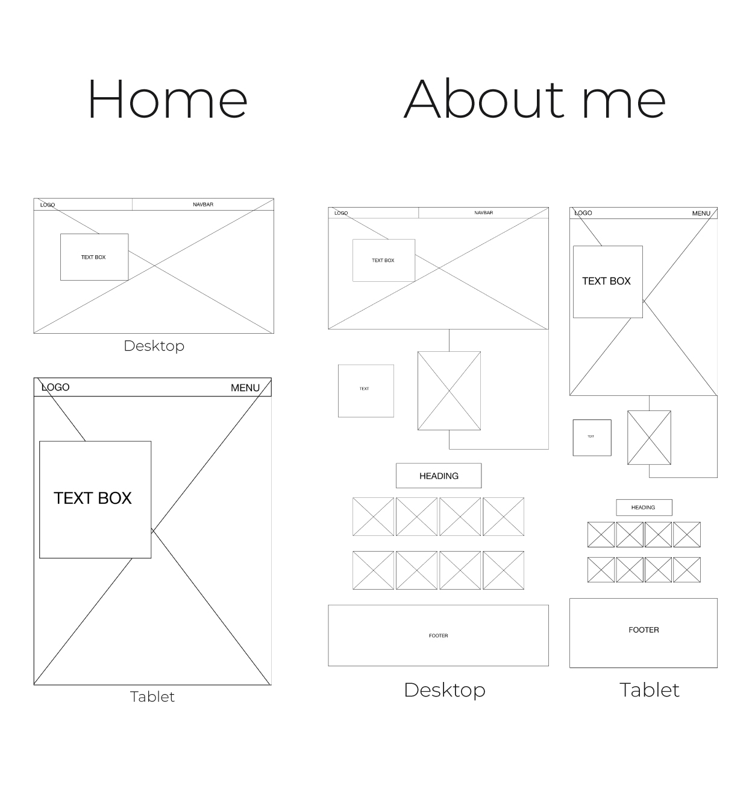
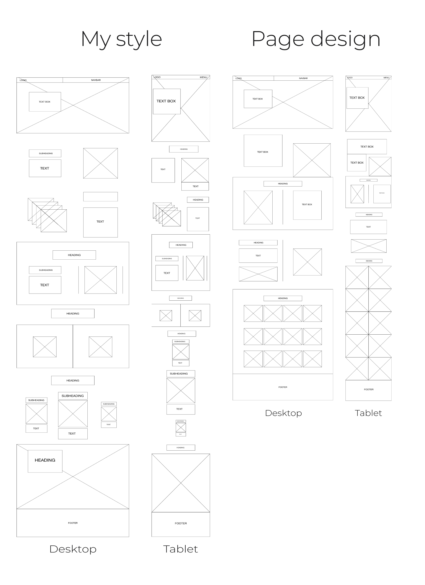
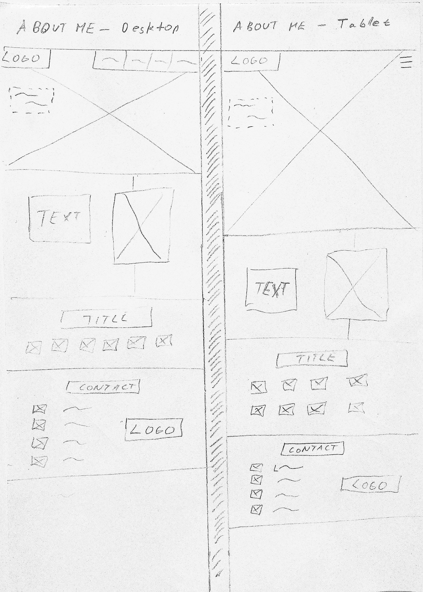
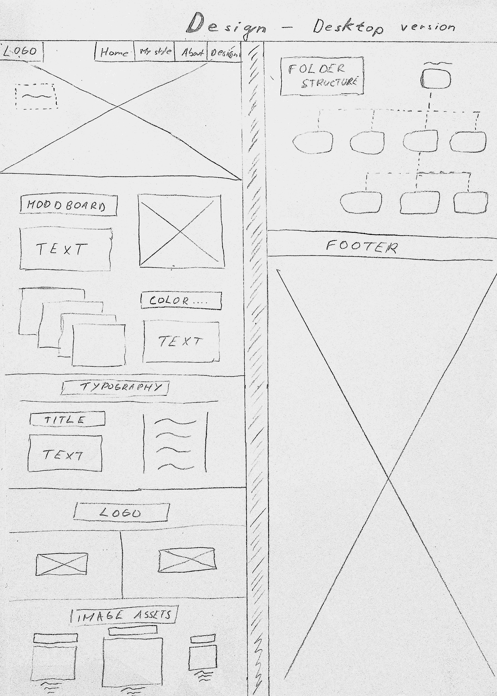
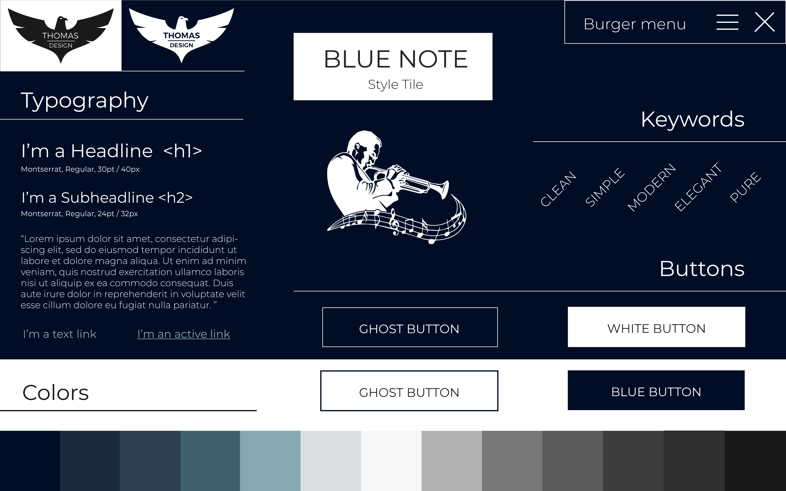
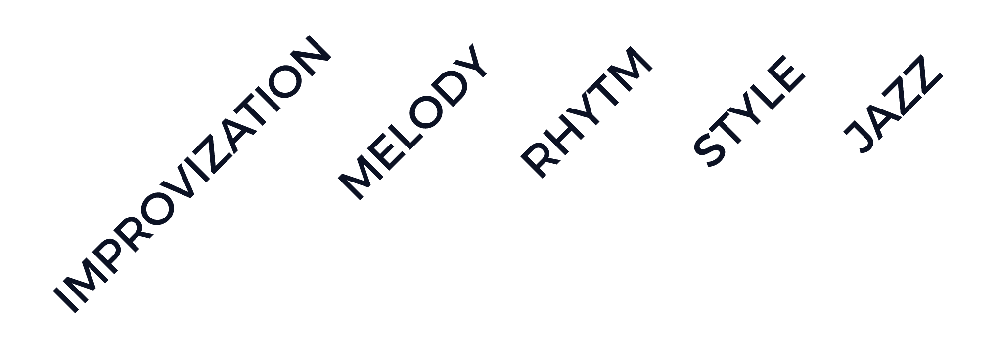
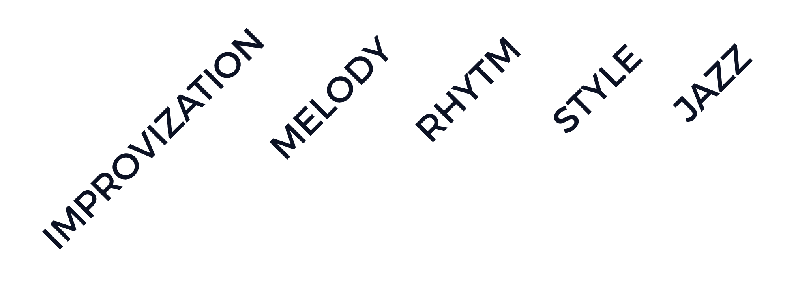

Responsive website
In our first assignment we learn what is something like moodboard and style tile which was new to me and had to choose typography and color scheme for our very first webpage. All of that had to be on our given art style which was in my case Blue Note. In this project I put together everything I have known and learned about responsivity and designing webpages. With the content ready from previous assignment, I made my first webpage of this studies. I made sure the page worked on every device and was loading nicely thanks to semantic html elements and optimized images.


WIREFRAMES





PAPER
PROTOTYPE

 
